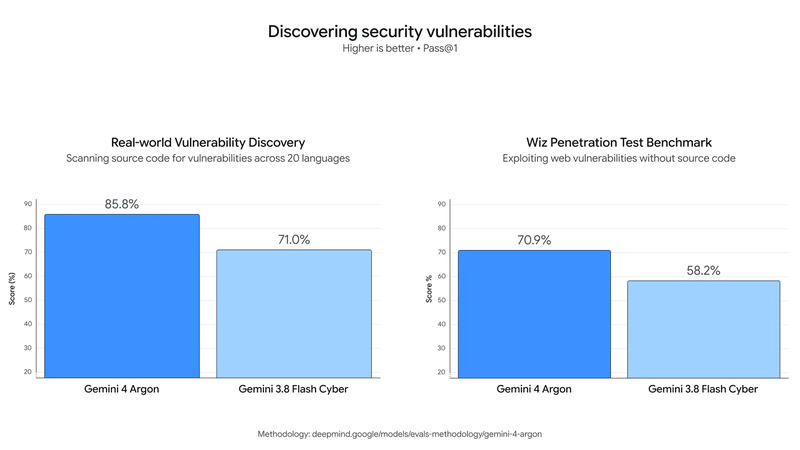

Feature 05 · ARTICLE · 2026 09
Gemini 4 Argon: our next era of frontier intelligence
Gemini 4 Argon is our new frontier model, built to sustain deep reasoning across complex, long-horizon workflows: real-world software engineering, enterprise knowledge work like legal and finance, and cybersecurity defense. It’s rolling out first to trusted cyber defenders through our Fairwind Program. Releasing capabilities at this level requires a phased approach. We’re engaged in the U.S. government’s voluntary process for pre-release model access, and we’ll keep iterating on guardrails with early testers before releasing to developers, enterprises, and consumers, starting with paid API customers and Google AI Ultra subscribers. The introductory price is $2 per million input tokens and $10 per million output tokens, with cached input 95% off. After the introductory period, $4 and $20 apply.
Inside Google
Argon already powers our internal workflows. Thousands of Googlers point to its strengths in specialized coding, deeper research, and writing quality.
Quantum: it helps our researchers optimize the spacetime resources (qubits × gates) of subroutines that bottleneck important applications. In one example, it beat the published baseline by 40% in a matter of minutes.
Memory: a team of Argon agents analyzed fleet-wide profiling telemetry, then autonomously identified and applied memory optimizations across our data centers. This freed over 300 TiB once rolled out, with an estimated 500 TiB to 1 PiB in total savings.
Migrations: Argon agents are migrating C/C++ codebases to Rust, from tens of thousands of lines in libraries like re2 and libgav1 up to 800K+ lines for the Fuchsia Zircon kernel. Because many of these systems are critical, the rewrites undergo rigorous automated and manual auditing, emulation testing, and review before production. For libgav1, our open source video decoder, agents took an existing Rust port and replaced 32K lines of SIMD code. They ran many rounds of profile-guided experiments and studied the compiler’s output, producing safe Rust that the compiler vectorizes on its own. The result is memory-safe, runs 2.7x faster than the Rust port with identical video output, and is closer to the optimized C++.
Room to think
We’re raising the output token limit to an industry-leading 1M tokens, up from 64K. When the model can generate hundreds of thousands of tokens in a single trajectory, it adds a new level of depth in reasoning to solve tough problems in one go.
Coding and enterprise work

DeepSWE v1.1 (long-horizon software engineering): new state of the art, 77.9%.
Vals Index (finance, coding, legal, and tax, weighted by contribution to U.S. GDP): leading model. Performance is similarly leading on Vals Finance Agent v2 and Harvey’s Legal Agent Benchmark.
AutomationBench (Zapier, end-to-end business functions): #1, 51.3%.
LVBench (long video understanding): state of the art, 91.7%.
Cyber defense

We trained Argon to be highly capable at cybersecurity defense. It can autonomously find, validate, and patch critical vulnerabilities. Trusted defenders and our own internal teams will get it without cyber guardrails.
Wiz uses it in Scan for Good, a free program protecting critical public infrastructure. There it uncovered a critical vulnerability exposing sensitive personal information across healthcare software used by hospitals worldwide, a severe risk previous frontier models had missed. On CWE-bench v1, which measures remediation, Argon ties for first place at 68%. Against 3.8 Flash Cyber, it found a wide range of exposures across 20 programming languages on our internal benchmark. On Wiz’s black-box penetration testing benchmark, it outperforms 3.8 Flash Cyber in mapping the attack surface, identifying vulnerabilities, and producing proof-of-concept evidence.
Safeguards before broad release

Misuse: Argon is designed to refuse harmful cyber and CBRN requests while preserving legitimate dual-use research, per our Frontier Safety Framework. We’re strengthening these safeguards, including monitoring the model’s internal activations to spot misuse. Internal and external red teams tested them with manual and automated attacks.
Prompt injection: Argon is our most resilient model yet against indirect prompt injection. Through automated red teaming and adversarial training, it leads on Gray Swan’s IPI benchmark. These attacks still demand constant vigilance and multiple layers of defense.
Misalignment: we monitor Argon’s chain-of-thought and actions and stop execution when necessary. A similar system watched our training runs and alerted an incident response team. We kept those findings out of training so as not to shape Argon’s reasoning to evade monitoring. We strongly encourage the industry to preserve reasoning transparency, so that model thoughts stay useful for diagnosing misalignment.
Hardening: we isolate and seal our sandboxed environments before high-risk training or evaluations. We’re committed to sharing these practices with partners.